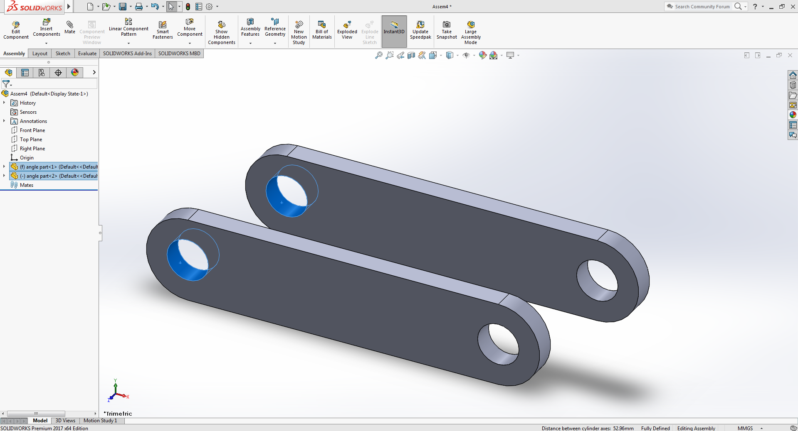

Concentric Mate
Places two cylindrical, spherical or conical faces of a part so that they share the same centerline or centeraxis.
Example:
Download Example parts

-
Follow the tutorial of Coincident Mate part to learn opening part files in assembly mode.
Same part file is used as in the previous sectionopen the part file and duplicate it by pressing ctrl key and dragging any face of the selected part in any direction
Click on the image to activate the zoom functionality,for better viewing use devices with bigger screens
-
Now select the circularly hollow face of both the part by while holding the ctrl key.
 -
Click on the Mate button given in the top ribbon section of SW.
After that select the concentric mate option given under standard mate section.

-
for the video tutorial see the angle mate section